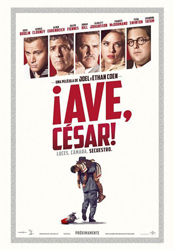
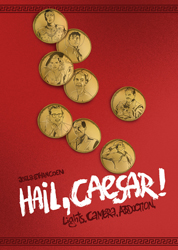
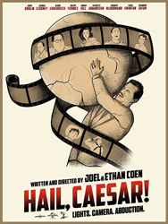
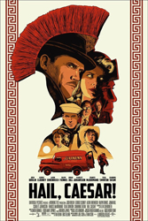
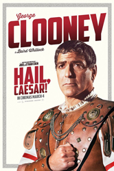

Josh Brolin
George Clooney
Natasha Bassett
Heather Goldenhersh
Ralph Fiennes
Robert Picardo
Armazd Stepanian
Ian Blackman
Patrick Fischler
Greg Baldwin
Fisher Stevens
Channing Tatum
Christopher Lambert
Frances McDormand
Veronica Osorio
Jonah Hill
Noel Conlon
Dolph Lundgren
Roger Deakins
Eddie Mannix is the "fixer" at prestigious Hollywood studio Capitol Pictures, His life is one of non-stop action: casting issues, production issues, keeping the studio's stars in line, ensuring the studio avoids negative publicity, dealing with the press and playing matchmaker to the studio's stars, amongst other things. However he is offered a ten years contract by airplane manufacturer Lockheed, but hesitates to leave the dream factory. But when studio star Baird Whitlock (George Clooney) disappears, abducted to a beach house by a communist collective, mainly of writers seeking fair remuneration through a ransom, Mannix has to deal with more than just the fix. In addition, Western star Hobie Doyle, whom the studio owner ordered to step in as star in lead role in a romantic non-action movie, proves helpful while sent on a fake date with an actress.
Set in 1951, Hail, Caesar! takes place at a transitional time for the film industry. The studio system was breaking down, and a Supreme Court ruling had forced studios to divest their movie theaters. Television, then still in its early years, threatened to pull away audiences. The Cold War and the Red Scare were both under way. Hollywood responded with escapist fare: westerns, highly choreographed dance and aquatic spectacles, and Roman epics with massive casts.
Costume designer Mary Zophres began work 12 weeks ahead of shooting, researching period wardrobe from the late 1940s on the assumption that most people routinely wear clothes purchased over the past few years. She designed for a working film studio of the early 1950s, plus six genre films, each of which featured a major actor working on the set for about a week. Photos from the MGM library and the Academy of Motion Pictures and Sciences showed that film crews dressed more formally than today - no shorts or trainers. Zophres produced about 15 boards of preliminary sketches, including "sculptural Technicolor gowns" for the ballroom drama inspired by the work of Charles James. Her double-breasted suit for Brolin was intended to blend with his skin tone, his moustache was styled after Walt Disney's, his hair was permed, and his character alone wore a fedora. Zophres modeled Tatum's look on Troy Donahue and Tyrone Power. The costumes in Ben Hur in particular served as references for the gladiator sequences, although Zophres employed the contemporary technique of using painted hard plastic foam instead of metal. The film ultimately required more than 2,500 costumes, including 170 Roman extras, 120 Israelites and about 45 slaves. About 500 of the costumes were custom-made. Toward the end of the shoot, the scope of the project overtook the budget, and Zophres completed some of the sewing herself.




